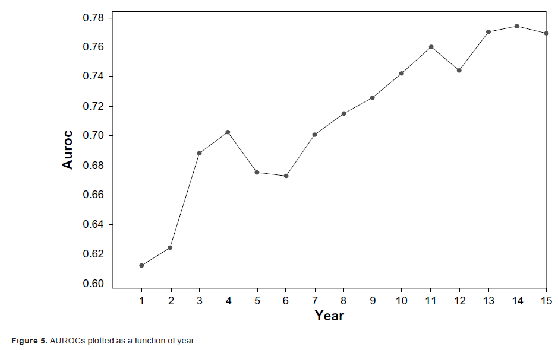

|
Di-Yang Xue(薛递洋)Ph.D. student, Intelligent Systems Program School of Computing and Information, University of Pittsburgh. Email: dix2 at pitt dot edu |
|
Home Projects Publications News CV Contact |
Project: Heart Failure Readmission Prediction
Readmission is an admission to a hospital within 30 days of a discharge from the same or another hospital.
Readmission rate is one of the key indicators of hospitals care quality.
To improve hospital quality of care, starting in 2012, the Centres for Medicare and Medicaid Services (CMS) started to financially penalize hospitals with excessive 30-day readmissions
We collected data from 14 hospitals in the University of Pittsburgh Medical Centre(UPMC) Health System. We included six types of data in our study: Demographic information, Healthcare utilization information,
Diagnosis information, Laboratory results, Medication during a patient’s hospital stay, and Narrative clinician reports.
We developed one Naïve Bayes risk assessment predictive model and compared it with two commonly used readmission-prediction methods: the HOSPITAL score method and the LACE score method.Our model had a good discriminatory power
(AUROC 0.650), and its performance was significantly better than the HOSPITAL score method and LACE score method
Similar models are being used in Children's Hospital of Pittsburgh of UPMC.
Project: classification of positive valence system symptom severity

|
The track 2 of the 2016 CEGS N-GRID challenge is to classify mental disorders based on initial psychiatric evaluation records.
We derived question-answer features and UMLS concept features(by MedLEE) from the initial reports, and built two decision tree models and one Bayesian network model.
I built two decision tree modles with the "rpartScore" package, and the macro average-inverse normalized mean absolute error score are 82.56% and 82.18%.
There were 24 participating teams, 65 valid submitted runs, we got the 4th place and was invited to publish one paper on Journal of Biomedical Informatics.
Project: predicting clinical outcomes using high-dimensional genomic datasets
We evaluated the performance of eight methods using high-dimensional discrete genomic datasets.
Eight methods: naive Bayes(NB), model averaging NB(MANB), feature selection NB(FSNB), efficient Bayesian multivariate classifier(EBMC), logistic regression(LR), support vector machines(SVM), lasso, and extreme learning machines(ELM)
Datasets: one hundred 1000-single nucleotide polymorphism(SNP) simulated datasets, ten 10000-SNP datasets, six semi-synthetic sets, and two real genome-wide association studies(GWAS) datasets.
Results: In fivefold cross-validation studies, the SVM performed best on the 1000-SNP datasets, while the BN-based methods performed best on the other datasets, with EBMC performed best.
I runed all the experiments except ELM method. The result is published on Journal of the American Medical Informatics Association.
Project: predicting patient survivorship using Efficient Bayesian Network Learning
|  |
The purpose of this project is to develop and evaluate a new Bayesian network (BN)-based patient survivorship prediction method.
We developed EBMC_Survivorship (EBMC_S), which predicts survivorship for each year individually. EBMC_S is based on the EBMC BN algorithm, which has been shown to handle high-dimensional data.
In this study, we evaluate EBMC_S using the Molecular Taxonomy of Breast Cancer International Consortium (METABRIC) dataset, which concerns breast tumors.
A 5-fold cross-validation study indicates that EMBC_S performs better than the Cox proportional hazard
model and is comparable to the random survival forest method.
We show that EBMC_S provides additional information such as sensitivity analyses, which covariates predict each year, and yearly areas under the ROC
curve (AUROCs).
I runed all the experiments. The result is published on Cancer Informatics.